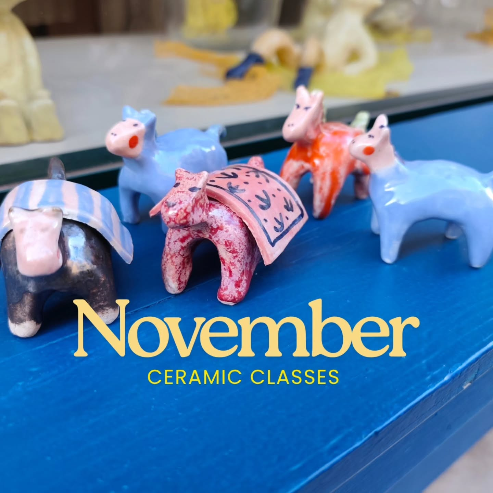
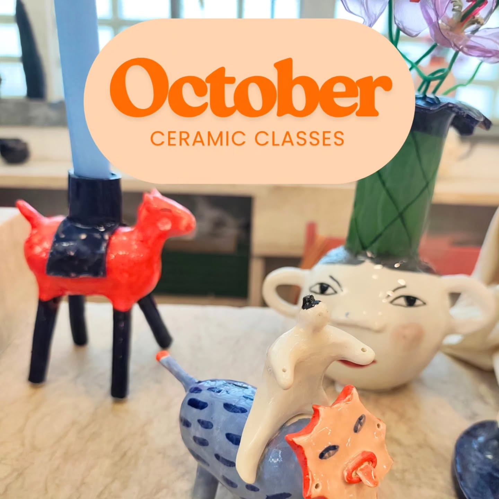

01 / HANDS ONCeramics
Ceramics
workshops
Explore clay, form and finish in a guided studio session. Check the next dates and booking details on Meetup.
See dates ↗A CREATIVE STUDIO IN LISBON
A place to slow down, get your hands in the clay and share a table. Discover workshops and gatherings at Casa Angelita.

A studio for the things you make together.
Casa Angelita is a creative studio in central Lisbon. Ceramics workshops, guest artists and moments around the table make room for learning by doing.
See the studio’s latest work ↗COME AS YOU ARE
A first look at what happens here. Dates and reservations stay on the studio’s Meetup page.

Explore clay, form and finish in a guided studio session. Check the next dates and booking details on Meetup.
See dates ↗
Special gatherings bring the studio together. Follow the latest announcements for upcoming dates.
Follow updates ↗
Artists and residents are part of the studio’s creative mix. Ask Casa Angelita about current collaborations.
Ask the studio ↗Photos from Casa Angelita’s public Instagram. Workshop dates, places and availability are confirmed on Meetup or with the studio.
DECEMBER AT CASA ANGELITA
The studio shares its upcoming schedule on Instagram and lists workshops and reservations on Meetup. Open the current calendar for dates, availability and booking details.
Open the Meetup calendar ↗COME FIND THE STUDIO
Rua Poiais de São Bento, 58
1200-349 Lisboa, Portugal